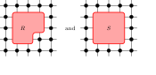
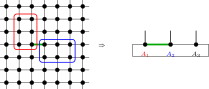

17 Fundamental Theorems for Injective and Normal PEPS
The following definitions and results extend the Fundamental Theorem to injective and normal PEPS, following Theorems 2 and 3 of [ MGRPG+18 ] .
For a finite simple graph \(G\), an edge is an ordered pair \((u,v)\) with \(u {\lt} v\) and \(u\) adjacent to \(v\). The ordering is only used to avoid double counting.
For a vertex \(v\), an incident edge is an edge of \(G\) having \(v\) as one of its endpoints.
A PEPS tensor on \(G\) with physical dimension \(d\) consists of a bond dimension \(D_e\) for every edge \(e\), together with a local tensor at each vertex \(v\) whose virtual indices are indexed by the edges incident to \(v\) and whose physical index lies in \(\{ 0,\ldots ,d-1\} \).
A virtual configuration assigns to every edge \(e\) one basis index in the corresponding bond space of dimension \(D_e\).
For a physical configuration \(\sigma \) on the vertices, the PEPS state coefficient is obtained by summing over all virtual configurations and, for each such configuration, multiplying the local tensor entries over all vertices.
Two PEPS tensors represent the same state if all their state coefficients agree for every physical configuration.
For an edge \(e = (u,w)\) with \(u {\lt} w\) and gauge \(X_e \in \mathrm{GL}(D_e)\), the gauge matrix applied at vertex \(v\) is \(X_e\) if \(v = u\) and \((X_e^{-1})^\top \) if \(v = w\). Diagrammatically, the ordered edge carries opposite endpoint actions:

The gauged tensor at vertex \(v\) is \(A^X_v\). For each incident edge \(ie\), write \(M_{ie}\) for the matrix specified by Definition 17.7, applied at the vertex \(v\) to the gauge on the underlying edge of \(ie\). Then \(A^X_v(\eta , \sigma ) = \sum _{\eta '} (\prod _{ie} M_{ie}(\eta (ie), \eta '(ie))) A_v(\eta ', \sigma )\). In tensor-network notation, one inserts the appropriate gauge matrix on each incident virtual leg of the local tensor:

The PEPS tensor obtained by applying edge-gauge matrices to \(A\), with vertex tensors \(A^X_v\).
Two PEPS tensors \(A, B\) are gauge-equivalent if they have the same bond dimensions and \(B\) is obtained from \(A\) by applying invertible gauge matrices on each edge.
Applying a gauge to a PEPS tensor preserves the state coefficients. Along each internal edge, the two endpoint insertions cancel:

Gauge equivalence implies that the two PEPS tensors represent the same state.
The local tensor evaluated at vertex \(v\) with virtual-index weighting \(f\), computing \(\sum _\eta (\prod _{ie} f(ie)(\eta (ie))) \cdot A_v(\eta , \sigma )\). This is multilinear in the components of \(f\), not linear in the full tuple.
A PEPS tensor \(A\) is vertex-injective if, at every vertex \(v\), the family of physical vectors
indexed by virtual configurations \(\eta \) on the edges incident to \(v\) is linearly independent in \(\mathbb {C}^d\). Equivalently, extending \(A_v\) by linearity to a map from the free vector space on virtual configurations into the physical space \(\mathbb {C}^d\) gives a linear map with trivial kernel. This matches the injectivity formulation of [ MGRPG+18 , Section 3 ] , where the local tensor is interpreted as a map from virtual configurations to the physical space.
For a fixed vertex \(v\), the family of local physical vectors \(\eta \mapsto A_v(\eta , \cdot )\) extends by linearity to a map from the coefficient space on local virtual configurations at \(v\) into \(\mathbb {C}^d\).
If \(A\) is vertex-injective, one may choose a linear map \(\Psi _v\) from \(\mathbb {C}^d\) to the coefficient space on local virtual configurations at \(v\) such that \(\Psi _v \circ \Phi _v = \mathbb {1}\).
For an endomorphism \(T\) of the coefficient space on local virtual configurations at \(v\), define the local physical operator
For every coefficient function \(c\) on the local virtual configurations at \(v\),
This is immediate from \(\Psi _v \circ \Phi _v = \mathbb {1}\).
If two virtual operations have the same canonical physical realization, then they agree.
Evaluate both physical realizations on vectors in the image of the local tensor map and use vertex injectivity.
The local projector is the physical realization of the identity virtual operator:
For a physical operator \(O\) on the local physical space at \(v\), define its virtual pullback by
This is the local injectivity step used in the \(O_1,O_2\mapsto W\) direction of Lemma \(\mathrm{inj\_ isomorph}\) in [ MGRPG+18 , Section 3 ] .
For every coefficient function \(c\), applying the local tensor map after the virtual pullback gives the projection of \(O(\Phi _v(c))\) onto the image of \(\Phi _v\).
Expand the definitions. The chosen left inverse gives \(\Psi _v\Phi _v=\mathbb {1}\), and the remaining map is the local projector.
If \(O\) sends every vector in the image of \(\Phi _v\) back into that image, then its virtual pullback realizes exactly the action of \(O\) on \(\Phi _v(c)\).
Use the preceding theorem and the image-preservation hypothesis.
If a physical operator \(O\) realizes a virtual operation \(T\) on every vector in the image of \(\Phi _v\), then pulling back \(O\) recovers \(T\).
After applying the local tensor map, both virtual operations have the same image. Vertex injectivity makes the local tensor map injective, so the virtual operations agree.
Two physical endpoint operations have the same virtual pullback exactly when their projected actions agree on every vector in the image of the local tensor map:
Apply the local tensor map to the two virtual pullbacks and use the pullback specification. The converse follows from vertex injectivity; the forward direction is obtained by rewriting the two virtual pullbacks.
Pulling back the canonical physical realization of a virtual operation recovers the original virtual operation.
The canonical physical realization agrees with the virtual operation on the image of the local tensor map. Apply the preceding recovery theorem.
Let \(P_v=\Phi _v\circ \Psi _v\) be the local projector, and let \(T_O=\Psi _v\circ O\circ \Phi _v\) be the virtual pullback of a physical operator \(O\). Then
Expand the definitions of the physical realization, the virtual pullback, and the local projector.
Suppose that the compressed physical action \(P_v O P_v\) agrees with the canonical physical realization of a virtual operation \(T\). Then the virtual pullback of \(O\) is \(T\).
The physical realization of the virtual pullback of \(O\) is \(P_v O P_v\). By hypothesis this is the physical realization of \(T\). Injectivity of the canonical physical realization gives equality of the virtual operations.
The compressed physical action \(P_v O P_v\) is the canonical physical realization of a virtual operation \(T\) if and only if the virtual pullback of \(O\) is \(T\).
One implication follows by realizing both virtual operations physically and using the formula for the physical realization of a pulled-back operator. The converse is the preceding recovery theorem.
A matrix on one edge incident to \(v\) acts on the coefficient space of local virtual configurations by applying the matrix to that edge coordinate and summing over the input edge index while keeping the residual virtual configuration fixed.
If the coefficient function is the unit basis function at one local virtual configuration, and the matrix acts on the distinguished incident edge, the result is the sum over the new distinguished edge index with the residual local boundary held fixed.
Evaluate both sides on a local virtual configuration and split into the two cases according to whether the residual boundary agrees with the fixed residual boundary.
Applying the local tensor map after a one-edge matrix action on a basis virtual configuration gives the corresponding linear combination of local tensor components.
Use the preceding coefficient identity and linearity of the local tensor map.
If \(A\) is vertex-injective, then a matrix acting on one edge incident to \(v\) is realized by a physical operator on the physical space at \(v\).
Apply the physical realization of local virtual operations to the one-edge matrix action.
Choosing one incident edge at \(v\) identifies the set of local virtual configurations with the product of the bond index on that edge and the residual indices on the remaining incident edges.
For an edge \(e = (u,v)\), the middle region is the complement \(V \setminus \{ u,v\} \).
For an edge \(e = (u,v)\), the three regions \(\{ u\} \), \(V \setminus \{ u,v\} \), and \(\{ v\} \) cover the whole vertex set.
Every vertex is either \(u\), \(v\), or different from both.
For any edge \(e = (u,v)\) and any function \(f\) on the vertex set with values in a commutative monoid \(M\),
Isolate the two distinguished endpoints in the product over \(V\) and group the remaining factors into the middle region.
For any edge \(e = (u,v)\), each summand in the PEPS coefficient factors into the tensor contribution at \(u\), the product over the middle region \(V \setminus \{ u,v\} \), and the tensor contribution at \(v\).
Expand the state coefficient and apply the product splitting at the chosen edge to the per-vertex product inside each summand.
For an edge \(e=(u,v)\), the boundary data consist of the virtual index on \(e\), the remaining virtual indices incident to \(u\), and the remaining virtual indices incident to \(v\). These are the indices over which the endpoint tensors couple to the blocked middle region.
A global virtual configuration determines edge-centered boundary data by reading the index on the distinguished edge and the residual endpoint indices.
A global virtual configuration is compatible with fixed edge-centered boundary data if it has the prescribed index on the distinguished edge and the prescribed residual indices at both endpoint stars.
For fixed boundary data \(\beta \), the middle configurations are the subtype of global virtual configurations satisfying the compatibility condition with \(\beta \).
A global virtual configuration is equivalently a choice of edge-centered boundary data together with a middle configuration in the corresponding fibre.
The left endpoint local virtual configuration is reconstructed from the edge index and the residual data on the left endpoint star.
The right endpoint local virtual configuration is reconstructed from the edge index and the residual data on the right endpoint star.
If a global virtual configuration is compatible with boundary data, then its restriction to the left endpoint star is the local configuration reconstructed from those data.
If a global virtual configuration is compatible with boundary data, then its restriction to the right endpoint star is the local configuration reconstructed from those data.
For an edge \(e=(u,v)\), inserted-edge boundary data consist of two independent indices on the bond \(e\), together with the residual virtual indices incident to \(u\) and to \(v\). These are the boundary indices used when a matrix is inserted on the distinguished bond.
Ordinary edge-centered boundary data determine inserted-edge boundary data by using the same bond index at both endpoints. This is the diagonal boundary datum selected by the identity matrix in the edge-insertion coefficient.
Ordinary edge-boundary data together with an independent right endpoint bond index are equivalent to inserted-edge boundary data. The ordinary boundary supplies the left bond index and the two residual endpoint boundaries.
Ordinary edge-boundary data together with an independent left endpoint bond index are equivalent to inserted-edge boundary data. The ordinary boundary supplies the right bond index and the two residual endpoint boundaries.
The diagonal inserted-boundary configurations are those inserted-edge boundary data for which the two distinguished bond indices agree. This is the support of the identity matrix inside the inserted-boundary sum.
Ordinary edge-boundary data are equivalent to diagonal inserted-boundary data. This is the finite reindexing map used after the identity matrix has removed all off-diagonal inserted-boundary summands.
Fixing the residual endpoint data but leaving the bond \(e\) out of the middle region, the open middle tensor is the contraction over all virtual indices away from \(e\) that are compatible with those endpoint residual data.
For an edge \(e=(u,v)\), the middle physical configurations are the physical indices on the vertices in \(V\setminus \{ u,v\} \). A global physical configuration restricts to such a middle configuration.
The ordinary and open middle contractions may be written using only the middle physical configuration, rather than a physical configuration on all vertices. This is the middle tensor in the three-site chain obtained after the edge blocking in arXiv:1804.04964, Section 3.
The middle contractions written with a global physical configuration are the corresponding middle-indexed contractions evaluated on the restricted middle physical configuration.
Rewrite the product over \(V\setminus \{ u,v\} \) as the product over the corresponding finite set of middle vertices.
An ordinary middle configuration for the edge-blocked contraction restricts to a virtual configuration on all edges except the distinguished edge. This is the first reindexing map needed to compare the identity insertion with the ordinary edge-blocked middle tensor.
Conversely, a compatible open middle configuration becomes an ordinary middle configuration after the fixed edge-boundary index is restored on the distinguished edge. Together with the restriction map, this gives the finite reindexing underlying the identity-insertion specialization.
For fixed edge-boundary data, ordinary middle configurations are equivalent to compatible open-middle configurations. This is the finite reindexing used when the inserted matrix is the identity.
The ordinary middle tensor and the open middle tensor agree after restoring the fixed distinguished-edge index and reindexing the finite sum, with the physical index already restricted to the middle block.
Reindex the ordinary middle configurations by the equivalence with compatible open-middle configurations, then compare each local tensor entry.
For an edge \(e=(u,v)\) and a matrix \(X\) acting on the bond space of \(e\), the edge insertion coefficient is the contraction obtained by inserting \(X\) between the endpoint tensors and the open middle tensor:
Restoring the fixed distinguished-edge index identifies the ordinary blocked middle tensor with the open middle tensor. This is the finite reindexing used before the identity matrix collapses the two inserted bond indices to the diagonal.
On the diagonal boundary datum selected by the identity matrix, the inserted-edge summand is the ordinary edge-blocked summand. Thus the remaining identity-insertion step is purely a finite summation statement: the off-diagonal inserted boundary data vanish and the diagonal data reindex the ordinary edge-boundary sum.
If the two inserted bond indices are distinct, then the corresponding summand in the identity insertion is zero. This is the pointwise off-diagonal vanishing used before the inserted-boundary sum is restricted to its diagonal part.
If the inserted matrix on the distinguished edge is the identity, then the edge insertion coefficient is the ordinary edge-blocked coefficient.
Split the inserted-boundary sum into the diagonal part, where the two inserted bond indices agree, and the off-diagonal part. The off-diagonal summands vanish for the identity matrix, while the diagonal summands reindex through the equivalence with ordinary edge-boundary data.
Fixing the edge-centered boundary data, the blocked middle tensor is the sum over global virtual configurations compatible with those data of the product of local tensor entries over the middle region \(V\setminus \{ u,v\} \). The graph-local contraction is read as a three-site chain:
The edge-blocked coefficient is the three-block contraction obtained from the left endpoint tensor, the blocked middle tensor, and the right endpoint tensor at the chosen edge.
For every edge \(e\), the edge-blocked three-block coefficient is exactly the original PEPS state coefficient.
Fibre the global virtual sum by the edge-centered boundary data. The remaining fibre sum is the blocked middle tensor, and the two endpoint factors are reconstructed from the same boundary data.
If the inserted matrix on the distinguished edge is the identity, then the edge insertion coefficient is the original PEPS state coefficient.
Combine the identity-insertion reindexing with the edge-blocking reindexing of the ordinary PEPS coefficient.
If two PEPS tensors have the same state, then their edge-blocked coefficients agree at every edge and every physical configuration.
Rewrite both edge-blocked coefficients as the corresponding PEPS state coefficients and apply the same-state hypothesis.
If two PEPS tensors have the same state, then their edge-centered identity insertions agree at every edge and every physical configuration.
Rewrite both identity insertions as the corresponding PEPS state coefficients and apply the same-state hypothesis.
For the edge-blocked three-site chain at \(e=(u,v)\), the middle tensor is the family obtained by fixing the two residual endpoint boundaries and evaluating the open middle contraction on the middle physical index. Its injectivity is the middle-block part of the assertion following the edge-blocking diagram.
For a chosen edge \(e=(u,v)\), the edge-blocked three-site chain is injective when the left endpoint tensor map, the middle tensor family, and the right endpoint tensor map are all injective.
A comparison from finite-region injectivity to the edge-middle tensor records the following assertion: if the middle vertex region \(V\setminus \{ u,v\} \) is injective after blocking, then the middle tensor in the edge-blocked three-site chain is injective. This isolates the finite-region contraction claim in [ MGRPG+18 , Section 3 ] .
If the original PEPS tensor is vertex-injective, then the two endpoint tensor maps in the edge-blocked three-site chain are injective.
Apply vertex injectivity at the two endpoints of the chosen edge.
If the original PEPS tensor is vertex-injective, then the two endpoint tensor maps in the edge-blocked three-site chain are injective at every edge.
For each edge \(e\), Theorem 17.76 gives injectivity of the two endpoint tensor maps at \(e\).
For a vertex-injective PEPS tensor, injectivity of the edge-blocked middle tensor gives the full injectivity statement for the edge-blocked three-site chain.
The endpoint assertions are supplied by vertex injectivity. The middle assertion is the assumed injectivity of the blocked middle tensor.
If every edge-middle tensor is injective, then a vertex-injective PEPS tensor gives an injective edge-blocked three-site chain at every edge.
For each edge \(e\), the one-edge reduction turns injectivity of the edge-middle tensor family at \(e\) into injectivity of the corresponding three-site chain.
Suppose the middle region \(V\setminus \{ u,v\} \) is injective after blocking, and suppose this region-injectivity assertion has been identified with injectivity of the corresponding edge-middle tensor family. Then a vertex-injective PEPS tensor gives an injective edge-blocked three-site chain at the edge \(e=(u,v)\).
The comparison gives injectivity of the middle tensor. The previous reduction combines this with vertex injectivity at the two endpoints.
Suppose every edge-middle region \(V\setminus \{ u,v\} \) is injective after blocking, and suppose finite-region injectivity has been identified with injectivity of the corresponding edge-middle tensor family. Then every edge-middle tensor family is injective.
For each edge \(e=(u,v)\), the hypotheses give injectivity of the middle region \(V\setminus \{ u,v\} \) after blocking; the comparison sends this to injectivity of the corresponding middle tensor family.
Suppose every edge-middle region \(V\setminus \{ u,v\} \) is injective after blocking, and suppose finite-region injectivity has been identified with injectivity of the corresponding edge-middle tensor family. Then a vertex-injective PEPS tensor gives an injective edge-blocked three-site chain at every edge.
The comparison gives middle-tensor injectivity for every edge. The all-edge middle-tensor theorem then gives three-site injectivity for every edge.
If \(A\) is vertex-injective, then for every edge \(e=(u,v)\), the two endpoint tensors together with the tensor obtained by blocking all vertices outside \(u\) and \(v\) form an injective three-site MPS. This is the precise assertion after the diagram \(\textup{eq:block\_ to\_ mps}\) in [ MGRPG+18 , Section 3 ] .
Let \(A\) be vertex-injective and let \(e=(u,v)\) be an edge. For every matrix \(M\) on the bond space of \(e\), the one-leg virtual action induced by \(M\) on the local tensor at \(u\), and likewise at \(v\), is realized by a physical operator on that endpoint’s physical space.
Apply the one-edge realization theorem to the two endpoint incidences of the distinguished edge.
Let \(e=(u,v)\). A physical operator at the left endpoint pulls back to the one-edge virtual action of \(M^{\mathsf T}\) if and only if its compressed physical action is the canonical realization of that one-edge virtual action.
This is the projected local recovery equivalence applied to the left incident edge of \(e\), with the transpose convention used by the left-endpoint coefficient identity.
Let \(e=(u,v)\). A physical operator at the right endpoint pulls back to the one-edge virtual action of \(M\) if and only if its compressed physical action is the canonical realization of that one-edge virtual action.
This is the projected local recovery equivalence applied to the right incident edge of \(e\).
Let \(e=(u,v)\) and let \(\sigma \) be a physical configuration. If a physical operator on \(v\) realizes the one-edge virtual matrix action on the distinguished incident edge, then the inserted-edge coefficient at \(\sigma \) is obtained by leaving the left endpoint and open middle contraction explicit and applying that physical operator to the right endpoint tensor.
Expand the physical realization on a basis local configuration at the right endpoint. The resulting sum over the right bond index is then reindexed together with the ordinary edge-boundary data.
Let \(e=(u,v)\) and let \(\sigma \) be a physical configuration. If a physical operator on \(u\) realizes the one-edge virtual action of \(M^{\mathsf T}\) on the distinguished incident edge, then the inserted-edge coefficient for \(M\) at \(\sigma \) is obtained by applying that physical operator to the left endpoint tensor and leaving the open middle contraction and the right endpoint explicit.
Expand the physical realization on a basis local configuration at the left endpoint. The transpose converts the ordinary right bond index and the new left bond index into the coefficient \(M_{ij}\); the resulting finite sum is then reindexed with the ordinary edge-boundary data.
If the PEPS tensor is vertex-injective, then for every physical configuration \(\sigma \), each inserted edge matrix is realized by physical operators at the endpoint tensors: the left endpoint realizes \(M^{\mathsf T}\), the right endpoint realizes \(M\), and both realizations reproduce the same inserted-edge coefficient at \(\sigma \) in the edge-centered three-site decomposition.
Apply the local physical-realization theorem at the two endpoints and then use the two coefficient identities above.
Conversely, if two physical operations on neighboring particles act in the same way on the three-site state, then injectivity of the adjacent tensors recovers a virtual operation on their shared bond:
This is the \(O_1,O_2\mapsto W\) step in the proof of Lemma \(\mathrm{inj\_ isomorph}\).
Applying the three-site injective-chain theorem to the edge-blocked MPS gives an algebra isomorphism between matrix insertions on the chosen edge in the two PEPS tensors. Equivalently, for every matrix \(X\) inserted on that edge for the first tensor family, there is a uniquely determined matrix \(Y\) inserted on the corresponding edge for the second tensor family that gives the same edge-blocked state:
The insertion correspondence obtained from the three-site injective-chain theorem is an isomorphism between full matrix algebras on the chosen bond. Hence the two bond dimensions on that edge are equal, and the isomorphism is realized by conjugation with an invertible edge matrix \(Z_e\): \(Y=Z_e X Z_e^{-1}\). The matrix \(Z_e\) is unique up to multiplication by a nonzero scalar. This is the finite-dimensional matrix-algebra step used in [ MGRPG+18 , Section 3 ] after Lemma \(\mathrm{inj\_ isomorph}\).
For fixed \(A\), \(B\), a bond-dimension equality, and a vertex \(v\), this states the two local conclusions still needed from the blocked-middle reduction in [ MGRPG+18 , Section 3 ] : (i) each local component of \(B\) lies in the image of the local tensor map of \(A\), and (ii) the canonical pullback through the chosen left inverse of \(A\) factorizes as one invertible matrix on each incident edge.
This states the explicit local gauge formula that the edge-centered blocked-middle reduction is expected to produce: a family of invertible matrices on the incident edges of \(v\) whose product kernel reconstructs each local component of \(B\) from those of \(A\).
Any explicit local gauge formula from the blocked-middle reduction yields the factorized local gauge datum. The remaining open step is to derive this blocked-middle formula from equality of PEPS states.
The explicit local gauge formula already places each local component of \(B\) in the image of the local tensor map of \(A\). Applying the chosen left inverse of \(A\) identifies the canonical candidate with the same factorized coefficient kernel, so both parts of the factorized local gauge datum follow.
The edge gauges obtained by applying the three-site injective-chain theorem at each edge can be absorbed into the tensors of the second family. At a vertex \(v\), each incident edge contributes the appropriate oriented gauge or inverse gauge, producing the modified tensor \(\widetilde B_v\):
After this absorption, arbitrary insertions of the same matrix on the same edge are compared in the first PEPS and the modified second PEPS.
After the edge gauges have been absorbed into the second tensor family, for every edge and every matrix \(X\), inserting \(X\) on that edge in the first PEPS gives the same state as inserting \(X\) on the same edge in the modified second PEPS:
This is the blueprint form of the displayed equation \(\textup{eq:inj\_ equal\_ edge}\) in [ MGRPG+18 , Section 3 ] .
Under the factorized local gauge hypothesis, the local gauge formula follows. What remains open is to upgrade equality of the edge-blocked coefficients to the blocked-middle formula using the corresponding three-site injective-chain argument. The physical-realization and physical-to-virtual steps in that argument are recorded separately as Theorems 17.84 and 17.90. After Theorem 17.97 supplies the factorized local gauge hypothesis, injectivity on the star neighborhood provides a left inverse that isolates the local edge gauges:

The factorized local gauge datum already supplies the incident-edge invertible matrices and the factorized local coefficient identity.
Choose an edge \(e=(u,v)\) and block all other vertices into one middle tensor. The three resulting tensors form an injective chain, so the one-dimensional injective comparison assigns an invertible matrix to the edge \(e\). Repeating this for every edge and absorbing these matrices into the second tensor family gives the post-absorption insertion equality of [ MGRPG+18 , Section 3 ] : for every edge and every matrix, inserting that matrix on the edge in the first PEPS gives the same state as inserting it on the same edge in the modified second PEPS. Applying the local extraction at each vertex then gives one edge gauge family whose endpoint actions transform the first tensor family into the second:

The PEPS diagrams in this section record the gauge steps used in [ MGRPG+18 , Section 3 ] . The edge-orientation and vertex-action diagrams fix the endpoint convention for the edge gauges obtained by blocking the PEPS to a three-site injective MPS. The cancellation diagram is the converse contracted identity: inserting opposite endpoint actions on an internal edge leaves the PEPS coefficient unchanged. The edge-gauge absorption diagram records the formation of \(\widetilde B\) before the post-absorption insertion equality. The local-extraction diagram summarizes the comparison of one-site-enlarged injective regions with injective complements, after the edge gauges have been absorbed into \(\tilde{B}\). The global-consistency diagram summarizes repeating the edge blocking over all edges, so the two endpoint actions on a shared edge are one edge gauge. The two-injective-tensor diagram records Lemma \(\mathrm{inj\_ equal\_ tensors\_ 2}\) from the paper, and the final one-vertex-complement diagram records its application to one vertex and its complement. These pictures use the blueprint tensor-dot convention, but each one is attached to the same contraction, insertion, or blocking step as the corresponding argument in the paper.
For three virtual leg spaces \(\alpha ,\beta ,\gamma \) and an endomorphism \(Z\) of \(\beta \otimes \gamma \), define the induced endomorphism of \(\alpha \otimes \beta \otimes \gamma \) by acting as the identity on the \(\alpha \) leg and as \(Z\) on the remaining two legs. This is the \(I_\alpha \otimes Z\) form appearing after the first tensor is inverted in [ MGRPG+18 , Section 3 ] .
For an endomorphism \(U\) of \(\alpha \otimes \beta \), define the induced endomorphism of \(\alpha \otimes \beta \otimes \gamma \) by acting as \(U\) on the first two legs and as the identity on the \(\gamma \) leg. This is the \(U\otimes I_\gamma \) form in [ MGRPG+18 , Section 3 ] .
For an endomorphism \(W\) of \(\alpha \otimes \gamma \), define the induced endomorphism of \(\alpha \otimes \beta \otimes \gamma \) by acting as \(W\) on the outer two legs and as the identity on the middle \(\beta \) leg. This is the third residual form in [ MGRPG+18 , Section 3 ] .
In the proof of the generalized two-injective-tensor comparison, applying the inverse of the second injective tensor leaves three possible virtual operators on the exposed legs of the first tensor:
Inverting the first injective tensor then shows that the corresponding residual operator on the three exposed virtual legs has the three decompositions
Equivalently, for nonzero virtual leg spaces \(\alpha ,\beta ,\gamma \), if one endomorphism of \(\alpha \otimes \beta \otimes \gamma \) lies simultaneously in the three subspaces \(I_\alpha \otimes \operatorname {End}(\beta \otimes \gamma )\), \(\operatorname {End}(\alpha \otimes \beta )\otimes I_\gamma \), and the analogous subspace with \(I_\beta \) in the middle leg, then it is a scalar multiple of the identity. Thus the residual virtual operators are scalar multiples of the identity. This is the scalar step in the proof of [ MGRPG+18 , Section 3 ] .
Compare matrix entries. Equality with \(\operatorname {End}(\alpha \otimes \beta )\otimes I_\gamma \) forces all \(I_\alpha \otimes Z\) entries with different \(\gamma \)-indices to vanish. Equality with the middle-identity form forces all entries with different \(\beta \)-indices to vanish. The remaining diagonal entries are equal because the two identities compare them first along the \(\beta \)-direction and then along the \(\gamma \)-direction. Substituting the resulting scalar form of \(Z\) back into the two displayed equalities gives the same scalar form for \(U\) and \(W\).
Let \(A_1,A_2,B_1,B_2\) be injective tensors with the same virtual boundary spaces. Suppose that inserting an arbitrary matrix \(X\) on any shared virtual bond gives the same two-tensor state for the \(A\)-pair and the \(B\)-pair:
Then there is a nonzero scalar \(\lambda \) such that \(A_1=\lambda B_1\) and \(A_2=\lambda ^{-1}B_2\). This is the blueprint form of Lemma \(\mathrm{inj\_ equal\_ tensors\_ 2}\) in [ MGRPG+18 , Section 3 ] .
After the edge gauges have been absorbed into the second tensor family, the paper blocks one vertex \(v\) against its injective complement. Applying the generalized two-injective-tensor comparison to two regions that differ by exactly this vertex gives \(A_v\propto \widetilde B_v\):
This is the final local comparison following the equation \(\textup{eq:inj\_ equal\_ edge}\) in [ MGRPG+18 , Section 3 ] .
Suppose that the corresponding virtual edge spaces of \(A\) and \(B\) are already identified. If \(A\) and \(B\) are vertex-injective and give the same PEPS state, then there are invertible matrices \(X_e\), one for each edge, such that at every vertex the tensor \(B_v\) is obtained from \(A_v\) by the oriented endpoint action of the incident matrices.
Let \(A\) and \(B\) be vertex-injective PEPS tensors on a finite simple graph. If they give the same PEPS state, then their corresponding virtual edge spaces have the same dimensions and, after identifying these spaces, there are invertible matrices \(X_e\), one for each edge, such that \(B_v\) is obtained from \(A_v\) by the oriented endpoint action of the matrices incident to \(v\). This is Theorem 2 of [ MGRPG+18 ] .
17.1 Normal PEPS
Let \(V\) be a finite vertex set. For two regions \(A,B\subseteq V\), define the four regions \(A\setminus B\), \(A\cap B\), \(B\setminus A\), and \(V\setminus (A\cup B)\). These are the four regions used in the proof of Lemma 17.112. They also form an indexed family over \(\{ 0,1,2,3\} \) in the order \(A\setminus B\), \(A\cap B\), \(B\setminus A\), \(V\setminus (A\cup B)\).
Let \(V\) be a finite vertex set and let \(A,B\subseteq V\). The left-only and overlap regions reconstruct \(A\), the overlap and right-only regions reconstruct \(B\), the three inside regions reconstruct \(A\cup B\), and all four regions reconstruct \(V\). The same identities also hold in the indexed four-region family: pieces \(0\) and \(1\) reconstruct \(A\), pieces \(1\) and \(2\) reconstruct \(B\), and pieces \(0,1,2\) reconstruct \(A\cup B\). These same reconstructions are available as finite unions over the corresponding subfamilies of the indexed four-region family. Piece \(3\) is the complement of \(A\cup B\), equivalently the complement of the three inside indexed pieces, and also \(A^c\cap B^c\). The singleton subfamily \(\{ 3\} \) gives the outside block. Pieces \(2,3\) reconstruct \(A^c\), equivalently the complement of pieces \(0,1\), and pieces \(0,3\) reconstruct \(B^c\), equivalently the complement of pieces \(1,2\), again both as explicit unions and as finite unions over the indexed subfamilies. Conversely, pieces \(0,1\) are the complement of pieces \(2,3\), pieces \(1,2\) are the complement of pieces \(0,3\), and adding all four pieces reconstructs \(V\). Equivalently, each vertex lies in one of the four regions, and the indexed four-region family has union \(V\). In fact, every vertex belongs to exactly one indexed piece.
Check membership of an arbitrary vertex in \(A\) and in \(B\).
In the four-region decomposition, the left-only and right-only parts are disjoint from the overlap and from each other. Each inside part, and hence the union of the three inside regions, is disjoint from the outside region. In indexed form, the pieces forming \(A\) are disjoint from the pieces forming \(A^c\), and the pieces forming \(B\) are disjoint from the pieces forming \(B^c\), both as explicit binary unions and as finite unions over the corresponding selected indexed subfamilies. The indexed four-region family is pairwise disjoint.
Use the standard disjointness identities for set difference and intersection, together with the reconstruction of \(A\cup B\).
If two regions of a PEPS are injective, then their union is injective. The proof in [ MGRPG+18 , Section 3 ] blocks the network into four parts \(A\setminus B\), \(A\cap B\), \(B\setminus A\), and \((A\cup B)^c\), and applies the two available left inverses in sequence:

Put \(P_0=A\setminus B\), \(P_1=A\cap B\), \(P_2=B\setminus A\), and \(P_3=(A\cup B)^c\). Then \(P_0\cup P_1=A\), \(P_1\cup P_2=B\), and \(P_0\cup P_1\cup P_2=A\cup B\). Let \(\mathcal C_I\) denote contraction of the blocked tensor over the region \(\bigcup _{i\in I}P_i\). To prove injectivity of \(A\cup B\), take a boundary tensor \(X\) on \(P_3\) such that \(\mathcal C_{\{ 0,1,2\} }(X)=0\). Since \(P_0\cup P_1=A\) is injective, its left inverse gives
Reinsert the tensor on \(P_1\). Since \(P_1\cup P_2=B\) is injective, the left inverse for \(B\) gives
Thus \(\ker \mathcal C_{\{ 0,1,2\} }=\{ 0\} \), and therefore \(P_0\cup P_1\cup P_2=A\cup B\) is injective.
A region-injectivity hypothesis assigns to each finite vertex region the assertion that the tensor obtained by blocking that region is injective. This predicate is used for regions such as \(R\), \(S\), \(T\), and their complements in the normal PEPS proof. The union-closure hypothesis records the conclusion supplied by the source union-of-injective-regions lemma: the union of two injective regions is injective.
Under the union-closure hypothesis for region injectivity, any nonempty finite union of injective finite regions is injective.
Induct on the nonempty finite indexing set. The singleton case is the given injectivity hypothesis, and the induction step is one application of binary union closure.
Under the union-closure hypothesis for region injectivity, if the indexed subfamilies \(\{ 0,1\} \) and \(\{ 1,2\} \) in the four-region decomposition are injective, then the inside subfamily \(\{ 0,1,2\} \) is injective. Equivalently, injectivity of the two source-paper regions \((A\setminus B)\cup (A\cap B)\) and \((A\cap B)\cup (B\setminus A)\) gives injectivity of \((A\setminus B)\cup (A\cap B)\cup (B\setminus A)=A\cup B\).
Rewrite the three selected indexed unions as \(A\), \(B\), and \(A\cup B\), then apply binary union closure.
For a finite vertex region \(R\subseteq V\), its complement is \(V\setminus R\). Equivalently, a vertex lies in the complement exactly when it does not lie in \(R\).
The finite \(n\times m\) square lattice is represented by pairs of coordinates. The corresponding square-lattice graph has horizontal and vertical nearest-neighbor edges; the two elementary adjacency lemmas record the right-neighbor and upper-neighbor cases used for translated edge blockings, and the corresponding coordinate edges name those two nearest-neighbor edges as elements of the edge set. These named right and upward edges have the expected horizontal and vertical orientations. Every edge of this graph is horizontal or vertical, but not both. Since edges are represented by ordered endpoint pairs, a horizontal edge is oriented from left to right and is exactly the coordinate right edge from its left endpoint; similarly, a vertical edge is oriented from bottom to top and is exactly the coordinate upward edge from its lower endpoint. A coordinate rectangle is a product of a horizontal coordinate set and a vertical coordinate set. The \(2\times 3\) and \(3\times 2\) coordinate-product predicates assert only that these two coordinate sets have cardinalities \(2,3\) and \(3,2\), respectively. Contiguous coordinate rectangles are products of contiguous coordinate intervals, and the contiguous \(2\times 3\) and \(3\times 2\) predicates name the rectangular blocks used in the normal square-lattice theorem. The displayed region \(R\) is the union of a \(2\times 3\) contiguous rectangle with the \(3\times 2\) contiguous rectangle occupying its upper two rows and extending one column to the right. The displayed region \(S\) is the union of two \(2\times 3\) contiguous rectangles shifted by one horizontal coordinate, hence the full \(3\times 3\) square spanned by them. The displayed local-window model for \(T\) is the complement, inside a local \(5\times 6\) coordinate window, of the vertical \(2\times 3\) edge block and the horizontal \(3\times 2\) edge block shown in the source picture. The finite-lattice complementary block is the whole finite square lattice with those two edge blocks removed; this is the block denoted \(A_3\) in the proof of [ MGRPG+18 , Theorem 3 ] .
Membership in a coordinate rectangle is coordinatewise membership, the contiguous coordinate interval has the expected coordinate inequalities, membership in a contiguous coordinate rectangle is the conjunction of the four bounding inequalities, and membership in \(R\) is the disjunction of membership in the \(2\times 3\) lower-left piece or in the shifted \(3\times 2\) upper piece. Membership in \(S\) is the disjunction of membership in the left \(2\times 3\) piece or in the horizontally shifted \(2\times 3\) piece. Membership in the local-window \(T\) region is membership in the local \(5\times 6\) window together with nonmembership in the union of the two displayed edge blocks. Bounded contiguous coordinate rectangles of sizes \(2\times 3\) and \(3\times 2\) satisfy, respectively, the predicates for contiguous \(2\times 3\) and contiguous \(3\times 2\) square-lattice rectangles. The cardinality of a coordinate rectangle is the product of the two coordinate cardinalities, and the full coordinate rectangle is the whole finite vertex set.
The coordinate-rectangle statements follow from membership and cardinality identities for Cartesian products of finite coordinate sets. The contiguous-rectangle statement then unfolds the two coordinate intervals. The membership statements for \(R\), \(S\), and the two edge blocks removed from \(T\) additionally unfold membership in a union of two such rectangles, while membership in \(T\) also unfolds the set difference from the local \(5\times 6\) window. The shape predicates follow by using the displayed lower-left corners as witnesses.
If the displayed \(3\times 3\) window containing \(R\) and \(S\) lies in the finite square lattice, then \(R\) is the union of a contiguous \(2\times 3\) rectangle and a contiguous \(3\times 2\) rectangle, while \(S\) is the union of two contiguous \(2\times 3\) rectangles.
This is the defining description of \(R\) and \(S\), together with the coordinate bounds which make the displayed rectangles contiguous \(2\times 3\) and \(3\times 2\) rectangles.
If the two edge blocks cut out of the displayed \(T\)-region lie in the finite square lattice, then they are respectively a contiguous \(2\times 3\) rectangle and a contiguous \(3\times 2\) rectangle.
This is the defining description of the two removed edge blocks, together with the coordinate bounds which make them valid contiguous rectangles.
The two edge blocks removed from the displayed local \(T\)-region lie inside the local \(5\times 6\) coordinate window. They are disjoint from each other and from this local \(T\) region, and their union with it is exactly that local window.
This follows by unfolding the definition of \(T\) as the set-theoretic complement of the two displayed edge blocks inside the local window.
The finite-lattice complementary block around the edge is disjoint from the two displayed edge blocks, and its union with them is the full finite square lattice. The local-window \(T\) region is contained in this finite-lattice complementary block.
This is the set-theoretic complement of the two displayed edge blocks in the full finite square lattice. The containment of the local-window \(T\) region follows because its points also avoid the two removed edge blocks.
A rectangular cover of a square-lattice region is a nonempty finite family of regions whose union is exactly the given region, and each member of the family is a contiguous \(2\times 3\) or \(3\times 2\) rectangle. The two cases used in the proof are the cover of the local displayed \(T\)-region and the cover of the finite-lattice complementary block \(A_3\).
The present origin-based local-window model for the displayed \(T\)-region admits no nonempty finite cover by contained contiguous \(2\times 3\) and \(3\times 2\) rectangles whenever the ambient lattice contains the \(5\times 6\) window. The origin-based rotated local-window model used for vertical edges has the analogous obstruction whenever the ambient lattice contains the \(6\times 5\) window. The normalized \(5\times 6\) and \(6\times 5\) cases are recorded as corollaries. The present origin-based horizontal edge-complement model has the analogous obstruction whenever the ambient lattice contains the \(5\times 7\) frame; the normalized \(5\times 7\) case is again recorded as a corollary. The present origin-based vertical edge-complement model has the corresponding obstruction whenever the ambient lattice contains the \(7\times 5\) frame; the normalized \(7\times 5\) case is recorded as a corollary.
The lower-left point of the local window belongs to the present \(T\) model. Any contiguous \(2\times 3\) rectangle containing it also contains a point of the removed vertical edge block, while any contiguous \(3\times 2\) rectangle containing it also contains a point of the removed horizontal edge block. The rotated statement is the same coordinate argument with the two shapes interchanged. The horizontal edge-complement statement uses the same lower-left point, and so does the normalized vertical edge-complement statement. These cases are all instances of the same point-forcing obstruction to an exact rectangular cover.
If a square-lattice region has a nonempty finite cover by contiguous \(2\times 3\) and \(3\times 2\) rectangles, then rectangular injectivity and finite union closure imply that the region is injective.
Apply rectangular injectivity to every rectangle in the cover, then apply finite union closure to the nonempty family.
For the displayed regions \(R\) and \(S\) with the same lower-left corner, \(R\) is contained in \(S\). The difference \(S\setminus R\) is exactly the lower-right site of the \(3\times 3\) square: in coordinates, the site one obtains by shifting two steps horizontally and zero steps vertically from the lower-left corner.
Expand the two displayed unions. The only point of the second \(2\times 3\) piece of \(S\) which is not already in the union defining \(R\) is its lower-right point.
In the square-lattice normal theorem, every \(2\times 3\) and \(3\times 2\) rectangular region is assumed injective. The corresponding abstract hypotheses specify which finite regions have these two shapes and assert injectivity for all of them. In the coordinate square-lattice specialization, these two families are the contiguous coordinate \(2\times 3\) and \(3\times 2\) rectangles.
The coordinate square-lattice rectangular injectivity hypotheses determine abstract rectangular injectivity hypotheses, with the two abstract rectangular families taken to be the contiguous coordinate \(2\times 3\) and \(3\times 2\) rectangles.
This is the direct specialization of the abstract rectangular families to the two contiguous coordinate-rectangle predicates.
Under the coordinate square-lattice rectangular injectivity hypotheses, every bounded contiguous \(2\times 3\) rectangle and every bounded contiguous \(3\times 2\) rectangle is injective.
This is the defining rectangular injectivity hypothesis applied to the coordinate witnesses for the two rectangle shapes.
For the displayed local \(T\)-region inside its \(5\times 6\) coordinate window, if the smaller edge-block bounds \(x_0 + 5 \leq n\) and \(y_0 + 5 \leq m\) hold in the finite \(n\times m\) square lattice, then the coordinate square-lattice rectangular injectivity hypotheses imply that the vertical \(2\times 3\) block and horizontal \(3\times 2\) block removed from the window are injective. If, in addition, region injectivity is closed under unions, then the union of these two removed edge blocks is injective.
Apply the rectangular injectivity hypotheses to the already identified contiguous rectangle shapes of the two edge blocks. The final assertion is one application of union closure to these two injective blocks.
If the displayed local \(T\)-region has a nonempty finite cover by contiguous \(2\times 3\) and \(3\times 2\) rectangles, then rectangular injectivity and finite union closure imply that \(T\) is injective. The rotated vertical local \(T\)-region has the same conditional injectivity criterion.
Apply rectangular injectivity to every rectangle in the cover, then apply finite union closure to the nonempty family.
If the finite-lattice complementary block \(A_3\) has a nonempty finite cover by contiguous \(2\times 3\) and \(3\times 2\) rectangles, then rectangular injectivity and finite union closure imply that \(A_3\) is injective. In the normalized horizontal-edge \(5\times 7\) frame, it is enough to give such a cover of the local \(T\)-region, since adjoining the two top-collar \(3\times 2\) rectangles gives a cover of \(A_3\).
Apply rectangular injectivity to every rectangle in the cover, then apply finite union closure to the nonempty family. For the normalized \(5\times 7\) edge complement, first extend the local \(T\)-cover by the two top-collar rectangles.
In the normalized horizontal-edge \(5\times 7\) frame, any rectangular cover of the local \(T\)-region extends to a rectangular cover of the edge-complementary block \(A_3\) by adjoining the two top-collar contiguous \(3\times 2\) rectangles.
Index the new cover by the old cover indices together with two extra indices for the top-collar rectangles. The set equality is exactly the top-collar decomposition of the edge-complementary block.
In the normalized horizontal-edge \(5\times 7\) frame, the finite-lattice complementary block \(A_3\) is the local-window \(T\)-region together with two top-collar contiguous \(3\times 2\) rectangles. Consequently, if the local \(T\)-region is injective, then rectangular injectivity and union closure imply that \(A_3\) is injective. There is also a transposed \(7\times 5\) horizontal-frame collar identity, now using two contiguous \(2\times 3\) right-collar rectangles. For the rotated vertical edge-blocking regions, the corresponding complement is the rotated local \(T\)-region together with the same two right-collar rectangles; hence rotated \(T\)-injectivity, and hence a rectangular cover of rotated \(T\), implies injectivity of the vertical complementary block.
The two set identities follow by expanding the coordinate inequalities. The injectivity statements apply union closure first to the local \(T\)-region and the first collar rectangle, and then to the second collar rectangle.
In the normalized \(5\times 7\) horizontal-edge frame, the red block is the vertical \(2\times 3\) block, the blue block is the horizontal \(3\times 2\) block, and the complementary block is the finite-lattice edge complement \(A_3\). The distinguished edge is a horizontal edge of the square-lattice graph. The left endpoint of the distinguished edge lies in the red block, the right endpoint lies in the blue block, the three regions are pairwise disjoint, and their union is the whole finite square lattice. If the local \(T\)-region is injective, rectangular injectivity and union closure give injectivity of all three blocks; in particular a rectangular cover of \(T\) suffices. The normalized \(7\times 5\) vertical-edge frame has the analogous red and blue rectangular blocks, a distinguished vertical edge, and the same set-theoretic blocking data; at this stage its complementary-block injectivity is either kept as an explicit hypothesis or obtained from rotated \(T\)-injectivity, and therefore from a rectangular cover of rotated \(T\), by the vertical collar lemma. In both cases the named blocking datum supplies the corresponding three injective regions for the edge-blocked chain.
The endpoint memberships are coordinate checks. Rectangular injectivity gives the rectangular red and blue blocks. For the horizontal edge, the collar lemma gives the complement, and the rectangular cover criterion removes the direct \(T\)-injectivity input when such a cover is supplied. For the vertical edge, complement injectivity is an explicit input or is obtained from the rotated \(T\)-cover. The disjointness and cover statements are finite-set complement identities.
For any coordinate origin whose horizontal blocking window lies in the finite square lattice, there is a distinguished horizontal edge with the same relative position as in the normalized picture. The translated red region is the \(2\times 3\) block, the translated blue region is the \(3\times 2\) block, and the complementary region is the finite-lattice complement of their union. If this complementary region is injective, these three regions form the one-edge blocking datum; if it has a rectangular cover, rectangular injectivity and union closure supply that complementary injectivity. In both forms the datum supplies the three injective regions used in the edge-blocked chain. The distinguished edge is the corresponding coordinate right edge. At coordinate origin \(0,0\), the translated edge and the three translated regions specialize to the normalized horizontal picture.
The endpoint memberships and horizontal orientation are coordinate checks. Rectangular injectivity gives the red and blue blocks. The complementary block is supplied either as an input or from a rectangular cover, and the disjointness and covering identities follow from the finite-set complement formulas.
For any coordinate origin whose vertical blocking window lies in the finite square lattice, there is a distinguished vertical edge with the same relative position as in the normalized vertical picture. The translated red region is the \(3\times 2\) block, the translated blue region is the \(2\times 3\) block, and the complementary region is the finite-lattice complement of their union. If this complementary region is injective, these three regions form the one-edge blocking datum; if it has a rectangular cover, rectangular injectivity and union closure supply that complementary injectivity. In both forms the datum supplies the three injective regions used in the edge-blocked chain. The distinguished edge is the corresponding coordinate upward edge. At coordinate origin \(0,0\), the translated edge and the three translated regions specialize to the normalized vertical picture.
The endpoint memberships and vertical orientation are coordinate checks. Rectangular injectivity gives the red and blue blocks. The complementary block is supplied either as an input or from a rectangular cover, and the disjointness and covering identities follow from the finite-set complement formulas.
A translated edge window records that a chosen edge is one of the translated horizontal or vertical edge pictures, together with a rectangular cover of the complementary block. Such a window gives the one-edge blocking datum for that edge, hence the three injective regions used in the edge-blocked chain. The coordinate right and upward edges obtain such windows directly from the corresponding translated picture. Equivalently, an actual coordinate right or upward edge obtains such a window when it has the necessary room around it for the translated \(5\times 7\) or \(7\times 5\) frame and the complementary cover is supplied. The same criterion applies to an arbitrary horizontal or vertical square-lattice edge after identifying it with its coordinate right or upward representative. The oriented margin-and-cover datum is the corresponding per-edge form of this remaining finite-geometry input; it directly supplies the one-edge blocking datum and its three injective regions. The horizontal and vertical margin predicates name the coordinate inequalities needed to place these two translated frames, and there are corresponding coordinate and oriented-edge window constructors that take these predicates directly. On coordinate right and upward edges, translated windows force the corresponding margin predicates. The current open \(7\times 7\) model therefore does not admit translated windows for every edge; explicit boundary examples are recorded on all four sides. The margin-cover datum stores these named predicates, so such data force the corresponding horizontal and vertical margin inequalities. In the present open rectangular coordinate model, this margin criterion does not apply to horizontal edges without enough left or right margin, nor to vertical edges without enough bottom or top margin; the corresponding \(7\times 7\) examples are recorded explicitly, including a single four-sided boundary obstruction. This records the remaining boundary geometry in the formal route; it is not a contradiction of the source theorem.
Given rectangular injectivity hypotheses, finite union closure, and a translated edge window at every edge of the finite square lattice, the corresponding one-edge blockings determine the normal edge-blocking hypotheses. This is the conditional construction; constructing such windows for all edges of the \(7\times 7\) lattice remains separate; the current open rectangular translated-window criterion does not by itself supply such a family. Equivalently, it is enough to supply the oriented margin-and-cover data at every edge. The one-edge datum recovered from the resulting hypotheses is the datum supplied by the corresponding margin-and-cover input, and the resulting hypotheses give the three injective regions at every edge. The current open rectangular \(7\times 7\) model does not admit such margin-and-cover data for every edge, because the boundary edges above fail this interior criterion.
Apply the general construction for one-edge blocking data to the datum supplied by the chosen translated window at each edge.
If region injectivity is closed under unions, then the coordinate square-lattice rectangular injectivity hypotheses imply that the displayed regions \(R\) and \(S\) are injective.
Region \(R\) is the union of one injective \(2\times 3\) rectangle and one injective \(3\times 2\) rectangle. Region \(S\) is the union of two injective \(2\times 3\) rectangles. Apply union closure in each case.
Around one edge, the normal proof uses a blocking into three injective regions: a red region containing one endpoint, a blue region containing the other endpoint, and an injective complementary region. The three regions are pairwise disjoint and cover the whole vertex set. The edge-blocking hypotheses are the uniform version of this datum for every edge.
A family of one-edge blocking data determines the normal edge-blocking hypotheses. Conversely, for every edge, the normal edge-blocking hypotheses supply the corresponding one-edge datum and hence three injective regions: the red region, the blue region, and the complementary region.
The construction maps each field of the one-edge datum to the corresponding field of the uniform hypotheses. The injectivity statement is exactly the injectivity part of those hypotheses.
For each site, the normal theorem assumes two injective regions with injective complements that differ exactly at that site. This is the one-site comparison used after the edge gauges have been obtained.
For the two regions associated to a site \(v\), a vertex \(w\) belongs to the region containing \(v\) if and only if either \(w=v\), or \(w\) belongs to the comparison region omitting \(v\).
If \(w=v\), use the distinguished-site membership and nonmembership assumptions. If \(w\neq v\), use the equality of the two regions away from the distinguished site.
In the translationally invariant square-lattice proof, the source paper assumes that every \(2\times 3\) and \(3\times 2\) region is injective. The formal statement here is the corresponding abstract, scope-restricted hypothesis bundle: it records the rectangular injectivity assumptions, the size bound \(n,m\geq 7\) with \(|V|=nm\), and three finite regions \(R\), \(S\), and \(T\) whose injectivity is assumed directly. It does not by itself assert that these regions are the displayed square-lattice unions, nor that their translated variants give the edge-centred blocking around every edge. Conversely, for the coordinate square lattice with \(n,m\geq 7\), the rectangular hypotheses, union closure, and a rectangular cover of the displayed \(T\)-region yield this abstract \(R,S,T\) structure, with \(R\) and \(S\) obtained from their rectangular decompositions and \(T\) obtained from the supplied cover. Under the present exact-cover criterion this converse is vacuous at the origin: the no-cover lemma for the displayed \(T\)-region rules out such a cover. The source regions are:


Under the square-lattice normality hypotheses of [ MGRPG+18 , Theorem 3 ] , the regions \(R\), \(S\), and \(T\), together with their translated variants, give an edge-centred blocking into red, blue, and complementary injective regions. These are the regions on which the three-site injective-chain insertion argument is applied:

In the translationally invariant normal square-lattice case, the edge gauges obtained after blocking are represented by one horizontal matrix \(X\) and one vertical matrix \(Y\), unique up to scalar. Absorbing these matrices into \(B\) gives a tensor \(\widetilde B\), equivalently the final local gauge formula of [ MGRPG+18 , Theorem 3 ] :

Let \(A\) and \(B\) be translationally invariant normal square-lattice PEPS tensors such that every \(2\times 3\) and \(3\times 2\) region is injective. If they generate the same state on an \(n\times m\) region with \(n,m\geq 7\), then they are related by horizontal and vertical gauges \(X,Y\), up to a scalar \(\lambda \) satisfying \(\lambda ^{nm}=1\). This is [ MGRPG+18 , Theorem 3 ] .
The general normal theorem assumes both the edge-centred blockings into three injective regions and the one-site comparison regions with injective complements. These two assumptions are collected as the normal PEPS blocking hypotheses.
Suppose two normal PEPS generate the same state, can be blocked into three-site injective chains around every edge, and for every site admit two injective regions with injective complements that differ exactly at that site. Then their defining tensors are related by a local gauge, and the gauges are unique up to the scalar freedom allowed by the graph. This is the general normal-PEPS theorem stated after [ MGRPG+18 , Theorem 3 ] .
Two gauge families are equivalent modulo balanced edge scalars if there is a nonzero scalar \(c_e\) on each edge such that the corresponding endpoint actions rescale the oriented edge gauges, and the oriented product of those endpoint scalars is \(1\) at every vertex.
If two gauge families differ by a balanced edge-scalar reweighting, then they produce the same gauged tensor at every vertex.
In the defining sum for the gauged tensor, each incident edge contributes its endpoint scalar factor in addition to the original gauge entry. The product of these endpoint scalars is \(1\) by the balancing condition, so every summand is unchanged.
If two gauge families relate the same vertex-injective PEPS tensor to the same target tensor, then their edge gauges differ by nonzero scalars \(c_e\) whose oriented product at every vertex is \(1\). Thus the correct graph quotient is by balanced edge scalars.
The local left inverse \(\Psi _v\), the realization map \(T \mapsto O_T\), the split at one incident edge, and the partition \(V = \{ u\} \sqcup (V \setminus \{ u,v\} ) \sqcup \{ v\} \) isolate the local indices and maps needed for the edge-centered reduction of [ MGRPG+18 , Section 3 ] . The middle-region blocked coefficient is constructed by the preceding definitions; the remaining local-gauge step is the comparison with the corresponding three-site injective chain. The uniqueness statement has now been repaired to a quotient by balanced edge scalars, but its proof still requires the same blocking construction together with the corresponding tensor-factor uniqueness statement at a single vertex.